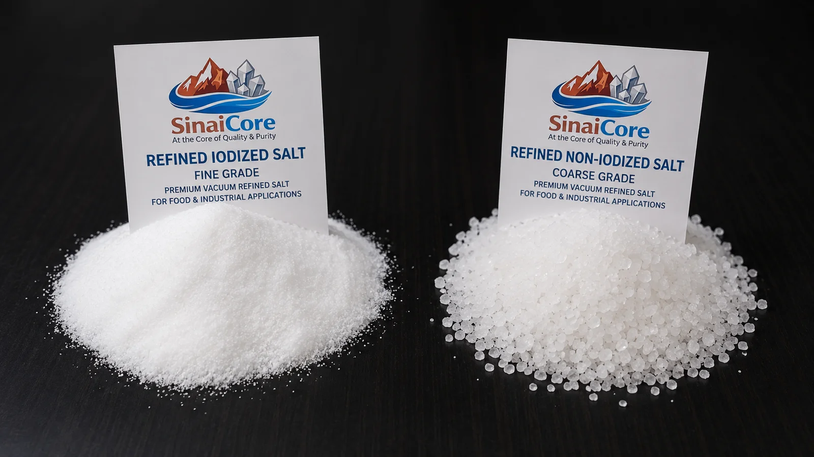

Industrial
Premium Refined Salt Solutions
Sodium chloride (NaCl): ≥ 99.5%. SinaiCore supplies premium refined salt produced by qualified refining partners and managed according to defined customer specifications, quality requirements, and export procedures.
≥ 99.5%NaCl Purity
≤ 0.2%Moisture